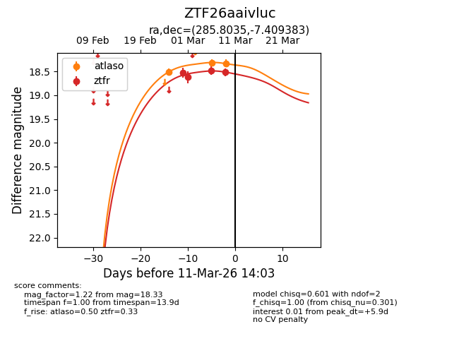
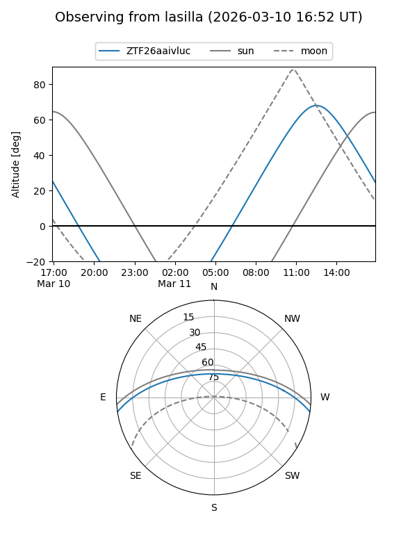
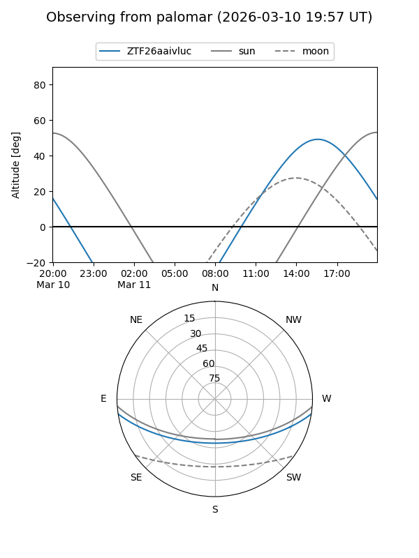
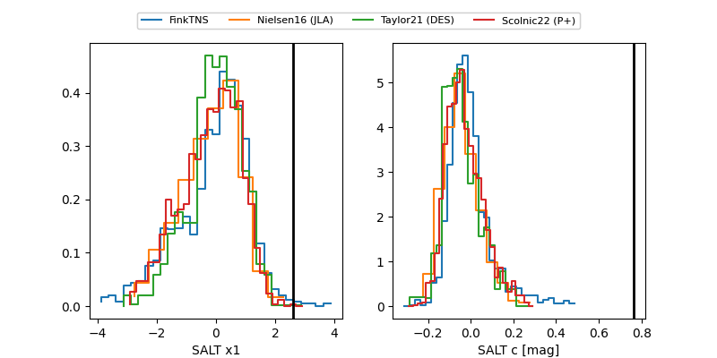

ZTF26aaivluc
Target ZTF26aaivluc at 2026-03-11 14:04
Aliases and brokers:
FINK: link
Lasair: link
ALeRCE: link
alt names
ZTF26aaivluc (ztf,fink_ztf)
Coordinates:
equatorial (ra, dec) = 285.8035,-7.40938
equatorial (HMS+DMS) = 19:03:12.85,-07:24:33.78
galactic (l, b) = (27.6505,-5.97714)
Flags:
Photometry:
last atlaso=18.33, ztfr=18.51
3 atlaso, 4 ztfr detections
Lightcurve

Visibility


Additional plots
